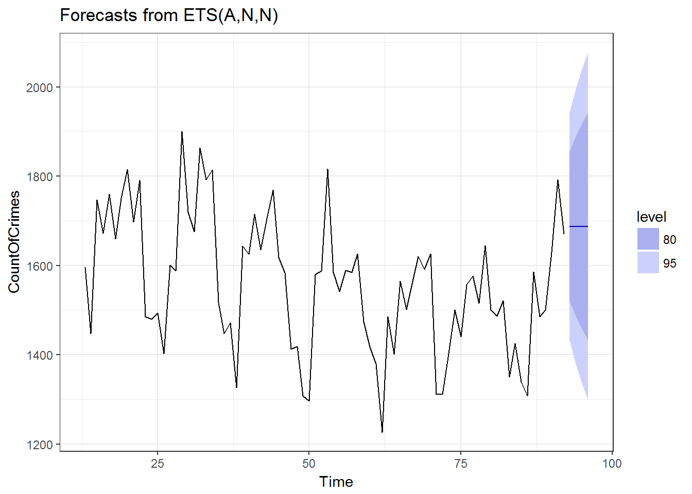

Chapter 26 Predictions using ETS for Battery - Simple Assault
We predict the Crimes for the Battery - Simple Assault for the months of September to December 2017 using ETS.
CountOfCrimes = ts(LACrimeGroupBatterySA$CountCrimes)
fit = ets(CountOfCrimes)
predictions = fit %>% forecast(h=4)
predictions %>% autoplot(include=80) +theme_bw()
The predictions for months of September to December 2017 using ETS are shown here.
| Months | Predictions |
|---|---|
| September 2017 | 1688 |
| October 2017 | 1688 |
| November 2017 | 1688 |
| December 2017 | 1688 |